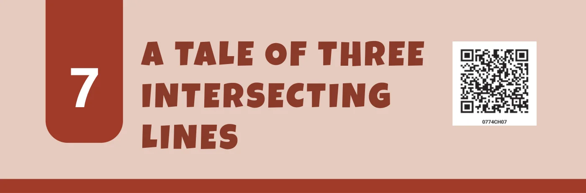
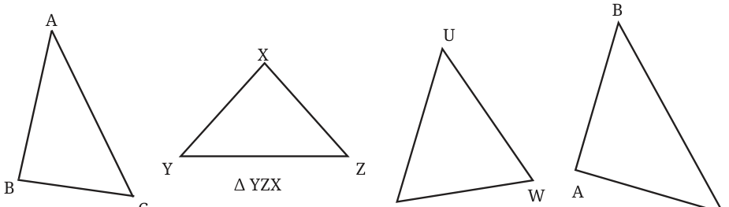
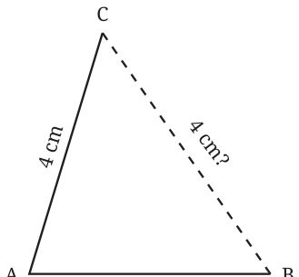
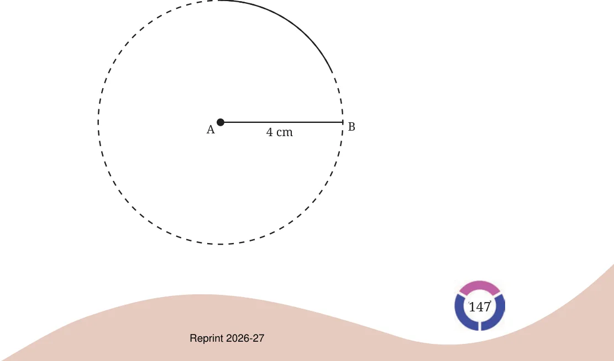
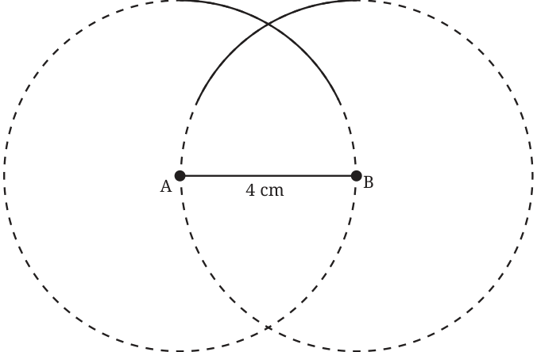
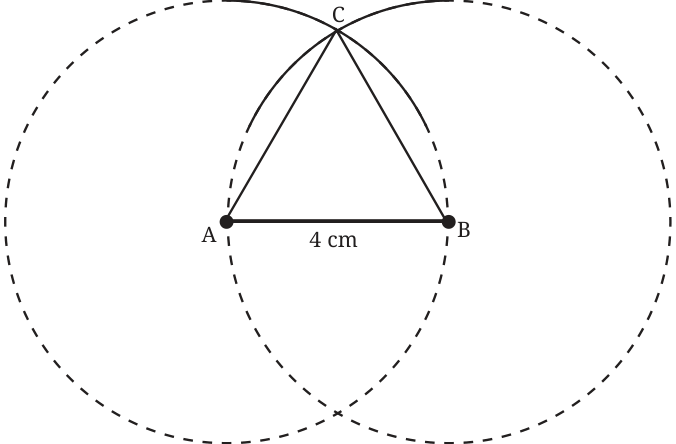

A triangle is the most basic closed shape. As we know, it consists of:
- three corner points, that we call the vertex of the triangle, and
- three line segments or the sides of the triangle that join the pairs of vertices.
Triangles come in various shapes. Some of them are shown below.

Observe the symbol used to denote a triangle and how the triangles are named using their vertices. While naming a triangle, the vertices can come in any order.
The three sides meeting at the corners give rise to three angles that we call the angles of the triangle. For example, in \(\triangle ABC\), these angles are \(\angle CAB\), \(\angle ABC\), \(\angle BCA\), which we simply denote as \(\angle A\), \(\angle B\) and \(\angle C\), respectively.
What happens when the three vertices lie on a straight line?
7.1 Equilateral Triangles
Among all the triangles, the equilateral triangles are the most symmetric ones. These are triangles in which all the sides are of equal lengths. Let us try constructing them.
Construct a triangle in which all the sides are of length 4 cm.
How did you construct this triangle and what tools did you use? Can this construction be done only using a marked ruler (and a pencil)?
Constructing this triangle using just a ruler is certainly possible. But this might require several trials. Say we draw the base — let us call it AB — of length 4 cm (see the figure below), and mark the third point C using a ruler such that AC = 4 cm. This may not lead to BC also having a length of 4 cm. If this happens, we will have to keep making attempts to mark C till we get BC to be 4 cm long.

How do we make this construction more efficient?
Recall solving a similar problem in the previous year using a compass (in the Chapter ‘Playing with Constructions’). We had to mark the top point of a ‘house’ which is 5 cm from two other points. The method we used to get that point can also be used here.
After constructing AB = 4 cm, we can do the following.
Step 1: Using a compass, construct a sufficiently long arc of radius 4 cm from A, as shown in the figure. The point C is somewhere on this arc. How do we mark it?

Step 2: Construct another arc of radius 4 cm from B.

Let C be the point of intersection of the arcs.
The construction ensures that both AC and BC are of length 4 cm. Can you see why?
Step 3: Join AC and BC to get the required equilateral triangle.
